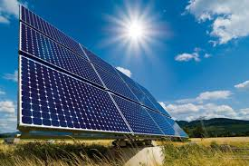
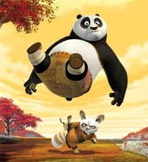

| Software Testing WORKSHOP |
Solar Energy WORKSHOP  | 3D Animation WORKSHOP the process used for generating animated images by using computer graphics. The more general term computer-generated imagery encompasses both static scenes and dynamic images while computer animation only refers to moving images.Modern computer animation usually uses 3D computer graphics, although 2D computer graphics are still used for stylistic, low bandwidth, and faster real-time renderings. |
|
| Solar energy is radiant light and heat from the sun harnessed using a range of ever-evolving technologies such as solar heating,Active solar techniques include the use of photovoltaic systems, concentrated solar power and solar water heating to harness the energy. Fee: Rs 200 |
 Fee: Rs 200 |